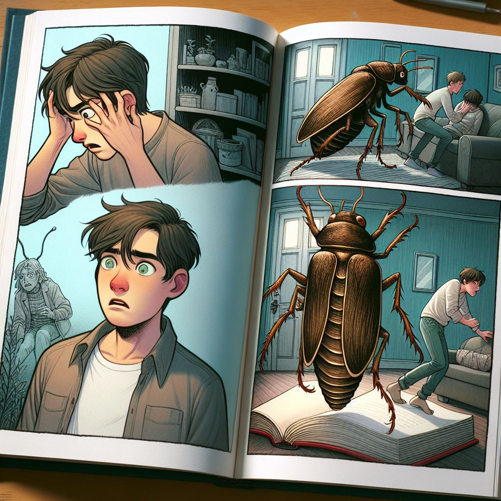

작가
프란츠 카프카
출판일
1915년
감상평에 대한 AI 그림
프란츠 카프카의 '변신'은 주인공 그레고르 잠자가 갑작스럽게 벌레로 변하면서 겪는 심리적 고통과 가족의 반응을 생생하게 그려낸 작품이다. 이 소설은 인간 존재의 불안과 소외감을 강렬하게 묘사하며, 독자에게 깊은 인상을 남기고 카프카의 독특한 서술 방식과 상징적인 표현이 돋보인다. 갑자기 변해버린 주인공의 내면심리와 주변 사람들의 반응이 생생하게 나타난 책이었다.

감상평에 대한 AI 감정 평가
~~~~AI평가~~~~~
😲 주인공의 내면 변화와 그에 대한 주변 사람들의 반응을 생생하게 묘사한 평가입니다.
😲 갑작스러운 변화를 통해 인간 관계와 심리를 현실적으로 그려낸 점을 잘 짚어낸 평가입니다.
😲 독자가 주인공의 심리와 주변 인물들의 반응에 깊이 공감할 수 있도록 표현한 평가입니다.